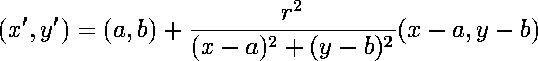

Inversion of points
| The reflection of a point P across a line m is the point P' for which m is the perpendicular bisector of the segment PP'. |
| Circle inversion is analogous to reflection over a line, with the circle taking the place of the reflecting line and the distance relationship that the radius of the circle is the geometric mean of the distances of P and P' to the center of the circle. |
| Denoting the center by Q and the radius by r, the distance relationship is |
| PQ/r = r/P'Q that is, PQ*P'Q = r2 |
| Specifically, given a circle C with center Q and radius r, the inverse in C of P is the point P' determined by two properties: |
|
|
| The nonlinearity of inversion necessitates a more careful formulation in coordinates. |
| Denote the coordinates of the relevant points by |
| Solving for |
|  |
| This is the formula for the inversion of P over C: |
| (x',y') = P' = IC(P) = IC(x,y) |
Return to Background.